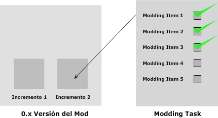

| Artifact: Incremento |
 |
|
Purpose
El propósito del incremento es respresentar el conjunto de Modding task completadas en una iteración de construcción |
Relationships
| Categories | ||
|---|---|---|
| Roles | Responsible: | Modified By: |
| Tasks | Input To: | Output From: |
| Process Usage | ||
Description
| Main Description | IncrementoEl incremento representa cada liberación previa del mod, la cual se traduce a un conjunto de modding task completadas en la fase de modding.  |
|---|
Key Considerations
| Recordar siempre realizar los respaldos correspondientes al final de cada incremento. |